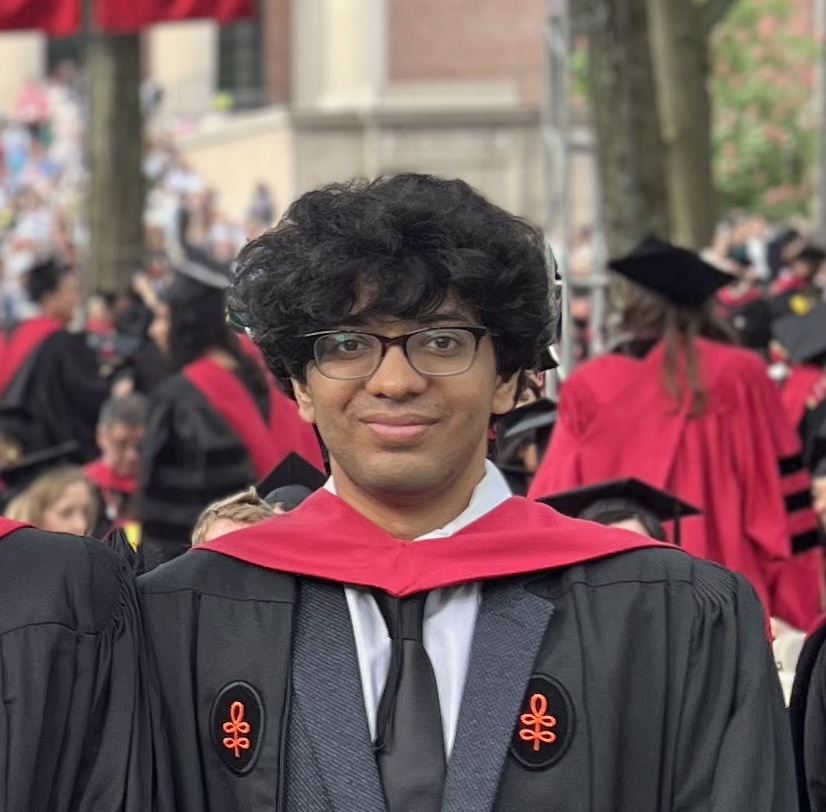

Hey there! Welcome to my personal website. I recently graduated with a Research Masters degree in Computational Science at Harvard University advised by Prof. Himabindu Lakkaraju.
I work broadly in the realm of trustworthy machine learning, and particularly, explainability, uncertainty quantification, interpretability, and fairness.
Prior to graduate school, I was a Lead Product Engineer in Machine Learning at Sprinklr AI for three years developing distributed machine learning systems for vision, language and speech processing. A few products I worked on - Visual Insights, Conversational AI, Voice AI.
In what seems like a lifetime ago, I graduated with a Bachelors degree from Indian Institute of Technology Madras where I was advised by Prof. Balaji Srinivasan. I had a fun time working on problems in computational fluid flow simulations and numerical methods, which gradually turned into an interest in machine learning.
I had the fortune of being a teaching fellow for following classes during my masters.
Here's what my students have to say about me. Not so subtle *humble brag* follows.